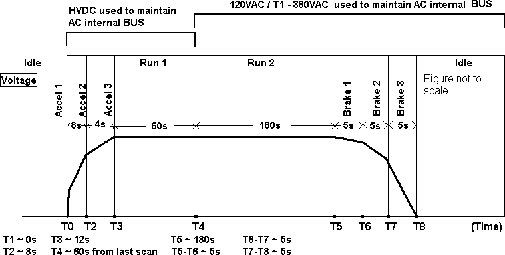

Proprietary to General Electric
Direction 5114043-800, Rev# 9
LightSpeed 3.X Service Methods (Advanced)
Proprietary to General Electric |
OBJECTIVE
Determine the phase of Rotor operation during which an error is generated.
Reference Documents:
2145832SCH Schematic - HEMRC_IF, HVDC_Sense, Chopper_Cntl, AC_Dist, HCB
2267317SCH Functional Interconnect HEMRC
The HEMRC Rotor has 9 phases of operation. There are 3 accel phases, 2 Run phases, 3 Brake phases, and idle. The 3 accel phases and the 1st run phase use HVDC. The rest of the phases use 120 VAC stepped up to 380VAC by T1. A graphical interpretation of the 9 Phases is shown in Illustration 1.
Illustration 1: 9 Phases of Rotor Operation

Before beginning this procedure, please read the safety information in Equipment Service - Gantry.
PROCEDURE SUMMARY
The best way to determine the phase is to understand which part of the scan cycle the rotor is in. This can be done by listening to tube accel, run, and Brake noises coming from the tube:
Tube will accelerate when commanded by diagnostics.(A.K.A. “Rotor Prep”)
Tube will accelerate when “Accept Rx” is checked.(A.K.A. “Rotor Prep”)
Tube will brake ≈ 180 seconds after last slice or after last diag request.